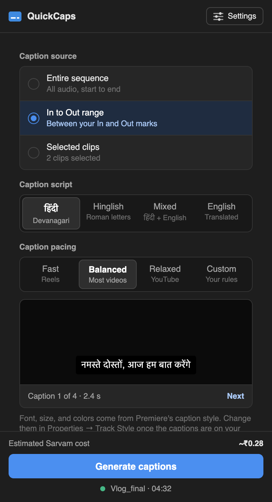
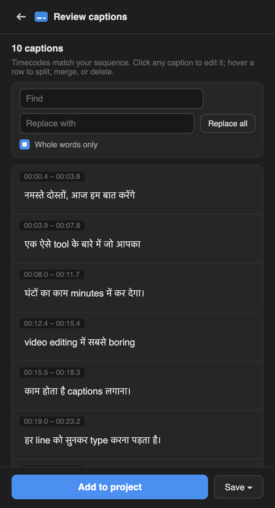

Captions for desi creators, right inside Premiere Pro.
Pick your audio, click Generate, and get Hindi, Hinglish, or English captions timed to the speech. Fix anything, then add them to your timeline.
Works with Premiere Pro 2022 and newer, on Mac and Windows. No subscription: you pay Sarvam AI about ₹5 for a 10-minute video.
No typing. Three steps.
-
Pick the audio
The whole sequence, your In to Out range, or just the clips you've selected.
-
Choose how it's written
हिंदी, Hinglish, Mixed, or English, at a pace that suits Reels or YouTube. Then click Generate.
-
Fix and add
Edit any line, fix a name everywhere with find and replace, and add the captions at the right timecode.


Made for the way we actually talk
- Hinglish that reads right
- Roman letters the way people type them, or Mixed, where English words stay English: "मेरा phone number है".
- Your names, spelled your way
- Add your name, channel, and slang once. Sarvam listens for them every time.
- Lands on the right timecode
- Caption an In-to-Out range and the captions sit exactly between your marks.
- Reels or long-form
- Short punchy lines for Reels, calmer ones for YouTube, or set your own.
- Clean-up switches
- Drop umm and uh, bleep the gaalis, or go Reels style with no full stops.
- Hindi and English together
- Two caption tracks from one click, so viewers can choose a language.
The plugin is free. The AI costs paise.
No monthly plan and no minutes that expire. QuickCaps uses your own Sarvam AI account, billed by the second at ₹30 per hour of audio. The panel shows the estimate before you click Generate.
New Sarvam accounts get ₹100 of free credit, about three hours of captions. Adding the English track doubles the cost; every other option is free.
| 60-second Reel | ₹0.50 |
|---|---|
| 10-minute vlog | ₹5 |
| 1-hour podcast | ₹30 |
Download QuickCaps
Premiere Pro 2022 to 2026
Recommended. Install it with the free ZXP Installer, then open Window, Extensions, QuickCaps. Captions go straight onto your timeline.
Download for 2022 to 2026Premiere Pro 2026 only
Optional: Adobe's newer plugin format. Double-click the file and Creative Cloud installs it, then open Window, UXP Plugins, QuickCaps. You drag the captions onto the timeline yourself.
Download the .ccxWorks on Mac and Windows. All versions
Then add your Sarvam key
Create a free key at dashboard.sarvam.ai, open QuickCaps, click Settings, and paste it in. That's the whole setup.
Why it's free
Most caption tools charge a monthly plan, whether you post daily or once a month. QuickCaps runs on your own Sarvam account, so you pay only for the audio you caption, and the plugin stays free and open source. Sarvam's models are built for Indian languages and code-mixed speech, which is why the Hinglish actually sounds like us.
Questions
How accurate is it?
It uses Sarvam's Saaras model, made for Indian languages and Hindi-English mixing. Clear audio gives the best results, and you can fix any line on the review screen before it reaches your timeline.
Can I edit the captions?
Yes. Edit, split, merge, or delete any line, and replace a word everywhere at once. If you close Premiere halfway, your edits are waiting when you come back.
Can I use an OpenAI, Gemini, or other AI key?
No. QuickCaps only works with Sarvam AI, because it needs speech-to-text with timestamps that handles Hindi and Hinglish well. If you paste another company's key, the panel tells you.
Where does my audio go?
From your computer straight to Sarvam, which sends back the text. QuickCaps has no server and collects nothing.
Can I change the font and style?
Yes. They're normal Premiere captions: select one and use Properties, then Track Style. Save a look once and reuse it on every video.
Why do I drag the captions in with the .ccx?
Adobe's newer plugin format can't create caption tracks yet. QuickCaps adds the captions to your Project panel, already timed, and you drag them to the start of the timeline. With the .zxp they're placed for you, on every version from 2022 to 2026.
Does it work on Windows?
Yes. The same downloads work on Mac and Windows.
The panel is blank after installing the .zxp
That's a known Adobe issue with some installers. On Mac, open Terminal and run defaults write com.adobe.CSXS.11 PlayerDebugMode 1. On Windows, open Command Prompt and run reg add HKCU\Software\Adobe\CSXS.11 /v PlayerDebugMode /t REG_SZ /d 1 /f. Use 12 instead of 11 for Premiere 2025 and later, then restart Premiere.